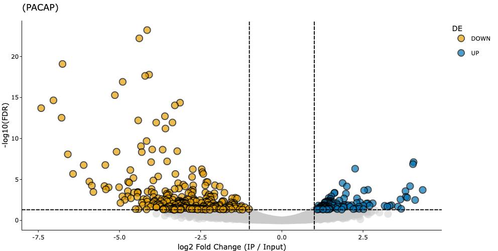

pTRAPPING takes the raw count data from a TRAP-seq or PhosphoTRAP experiment and finds which genes are specifically enriched in your cell population of interest — all in a few lines of R. You give it a counts table where every sample column is labelled with its treatment group, replicate number, and whether it is IP (immunoprecipitated) or INPUT (total RNA); the package figures out the rest. Three functions cover the full workflow: differential expression with your choice of statistical engine (ptrap_de()), a classic volcano plot for one condition (ptrap_volcano()), and a paired scatter plot to compare two conditions head-to-head (ptrap_volcano2()).
Installation
# install.packages("devtools")
devtools::install_github("laurenoconnelllab/pTRAPPING")Dependencies from Bioconductor (edgeR, limma, DESeq2) are installed automatically.
Functions at a glance
| Function | What it does |
|---|---|
ptrap_de() |
Differential expression: IP vs INPUT. Six statistical methods. |
ptrap_volcano() |
Volcano plot for a single condition. |
ptrap_volcano2() |
Scatter plot comparing two conditions side-by-side. |
Quick start
Get differential expression results of interesting genes from your counts matrix in just a few lines of code:
library(pTRAPPING)
# Load counts matrix
counts.mat <- read.delim(
system.file("extdata", "TAN_etal_2016_raw.txt", package = "pTRAPPING")
)
# Table of differentially expressed genes of interest for one condition using the default method "LRT" from edgeR
ptrap_de(
counts_mat = counts.mat,
treatment_name = "PACAP",
kable.out = TRUE,
genes.filter = c(
"Adcyap1",
"Bdnf",
"Ucn3",
"Gng8",
"Fosl2",
"Junb",
"Trappc12",
"Gfap"
)
)| Gene | logFC | logCPM | LR | PValue | FDR | treatment | diffexpressed |
|---|---|---|---|---|---|---|---|
| Gng8 | 4.056 | 5.578 | 39.952 | <0.001 | <0.001 | PACAP | UP |
| Ucn3 | 3.949 | 5.218 | 25.454 | <0.001 | <0.001 | PACAP | UP |
| Bdnf | 4.338 | 3.090 | 23.035 | <0.001 | <0.001 | PACAP | UP |
| Trappc12 | -3.345 | 1.809 | 10.679 | 0.001 | 0.030 | PACAP | DOWN |
| Gfap | -2.979 | 5.086 | 10.628 | 0.001 | 0.031 | PACAP | DOWN |
| Fosl2 | 0.781 | 6.990 | 3.694 | 0.055 | 0.304 | PACAP | NO |
| Adcyap1 | 1.516 | 3.665 | 2.708 | 0.100 | 0.398 | PACAP | NO |
| Junb | 0.757 | 4.568 | 1.385 | 0.239 | 0.600 | PACAP | NO |
Plot the same results in an interactive volcano plot and hover over the points to see gene labels, logFC, p-value, and FDR:
# Volcano plot — label a few genes of interest
ptrap_de(
counts_mat = counts.mat,
treatment_name = "PACAP"
) |>
ptrap_volcano(
interactive = TRUE
)
Learn more
Full walkthrough: Getting started with pTRAPPING
The example dataset is from:
Tan, C.L., Cooke, E.K., Leib, D.E., Lin, Y.-C., Daly, G.E., Zimmerman, C.A., and Knight, Z.A. (2016). Warm-sensitive neurons that control body temperature. Cell 167, 47–59. https://doi.org/10.1016/j.cell.2016.08.028
- The PhosphoTRAP method was introduced in:
Knight, Z.A., Tan, K., Birsoy, K., Schmidt, S., Garrison, J.L., Wysocki, R.W., Emiliano, A., Ekstrand, M.I., and Friedman, J.M. (2012). Molecular profiling of activated neurons by phosphorylated ribosome capture. Cell 151, 1126–1137. https://doi.org/10.1016/j.cell.2012.10.039